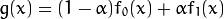
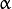
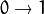
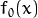
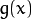
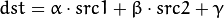
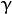
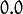

Adding (blending) two images using OpenCV¶
Goal¶
In this tutorial you will learn:
- what is linear blending and why it is useful;
- how to add two images using addWeighted
Theory¶
Note
The explanation below belongs to the book Computer Vision: Algorithms and Applications by Richard Szeliski
From our previous tutorial, we know already a bit of Pixel operators. An interesting dyadic (two-input) operator is the linear blend operator:

By varying  from  this operator can be used to perform a temporal cross-disolve between two images or videos, as seen in slide shows and film productions (cool, eh?)
Code¶
As usual, after the not-so-lengthy explanation, let’s go to the code:
#include <cv.h>
#include <highgui.h>
#include <iostream>
using namespace cv;
int main( int argc, char** argv )
{
double alpha = 0.5; double beta; double input;
Mat src1, src2, dst;
/// Ask the user enter alpha
std::cout<<" Simple Linear Blender "<<std::endl;
std::cout<<"-----------------------"<<std::endl;
std::cout<<"* Enter alpha [0-1]: ";
std::cin>>input;
/// We use the alpha provided by the user if it is between 0 and 1
if( input >= 0.0 && input <= 1.0 )
{ alpha = input; }
/// Read image ( same size, same type )
src1 = imread("../../images/LinuxLogo.jpg");
src2 = imread("../../images/WindowsLogo.jpg");
if( !src1.data ) { printf("Error loading src1 \n"); return -1; }
if( !src2.data ) { printf("Error loading src2 \n"); return -1; }
/// Create Windows
namedWindow("Linear Blend", 1);
beta = ( 1.0 - alpha );
addWeighted( src1, alpha, src2, beta, 0.0, dst);
imshow( "Linear Blend", dst );
waitKey(0);
return 0;
}
Explanation¶
Since we are going to perform:
We need two source images ( and
 ). So, we load them in the usual way:
). So, we load them in the usual way:src1 = imread("../../images/LinuxLogo.jpg"); src2 = imread("../../images/WindowsLogo.jpg");
Warning
Since we are adding src1 and src2, they both have to be of the same size (width and height) and type.
Now we need to generate the  image. For this, the function addWeighted comes quite handy:
beta = ( 1.0 - alpha ); addWeighted( src1, alpha, src2, beta, 0.0, dst);
since addWeighted produces:

In this case,  is the argument  in the code above.
Create windows, show the images and wait for the user to end the program.
Result¶
Help and Feedback
You did not find what you were looking for?- Ask a question on the Q&A forum.
- If you think something is missing or wrong in the documentation, please file a bug report.

Table Of Contents
Previous topic
Next topic
Changing the contrast and brightness of an image!